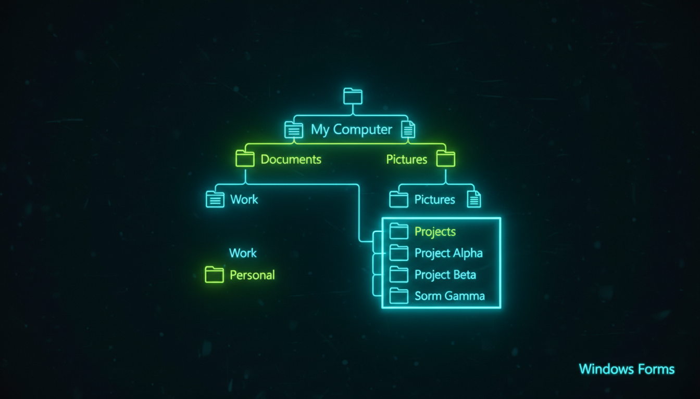

Ієрархічні дані, вузли, розгортання, події

// Дерево
TreeView^ tree = gcnew TreeView();
tree->Location = Point(20, 20);
tree->Size = Size(250, 300);
tree->BackColor = Color::FromArgb(30, 30, 50);
tree->ForeColor = Color::White;
// Створення вузлів
TreeNode^ root = gcnew TreeNode("Комп'ютер");
TreeNode^ drives = gcnew TreeNode("Диски");
drives->Nodes->Add(gcnew TreeNode("C:\"));
drives->Nodes->Add(gcnew TreeNode("D:\"));
root->Nodes->Add(drives);
TreeNode^ docs = gcnew TreeNode("Документи");
docs->Nodes->Add(gcnew TreeNode("Робота"));
docs->Nodes->Add(gcnew TreeNode("Особисте"));
root->Nodes->Add(docs);
tree->Nodes->Add(root);
tree->ExpandAll();
// Подія AfterSelect
tree->AfterSelect += gcnew TreeViewEventHandler(
this, &MyForm::OnTreeSelect);